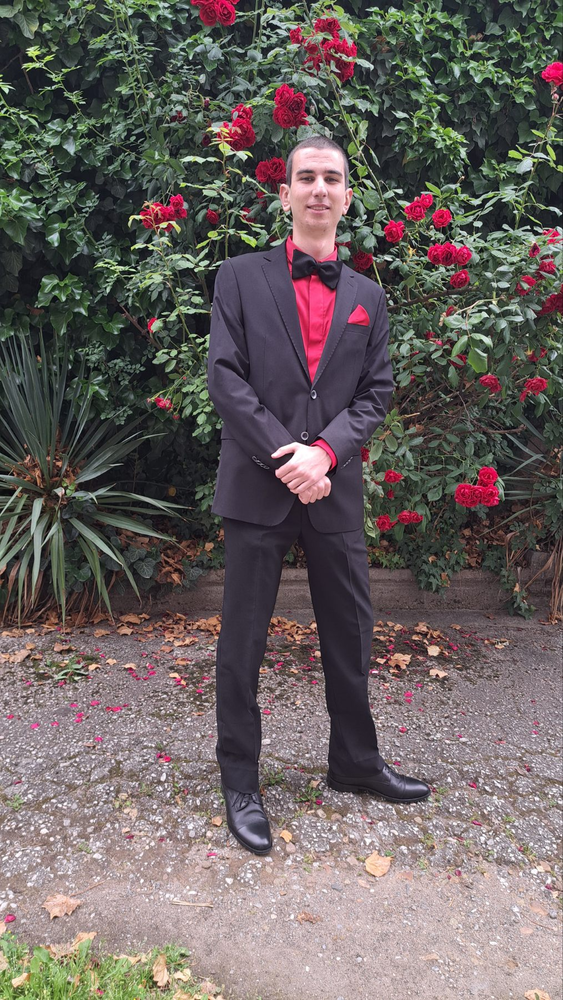

Kristin Toshkov
19
SOMBER
Young and ambitious, Kris has been fascinated by computers from a very young age. He loves spending his free time diving into all things tech, constantly exploring and learning. A big fan of video games, Kris enjoys them not just for fun but also as a way to connect with people and make new friends. He's also proven to be a great leader, guiding his teams with a mix of technical expertise and a collaborative spirit. His passion for technology, strong leadership skills, and eagerness to keep learning make Kris a promising talent in the tech world.
Althought a computer nerd at heart, Kris loves nature and art. As an ex-dancer he finds great inspiration and peace in the natural world. One of his more recent endeavors - Digital Art. His red sugar skull "The Mask", a result of art ambition with little to no experience, even became his personal calling card.


Graduated from 51 SU with an extensive C# program and on the final stage of the SoftUni Java courses his skills include:
- C# .NET
- Java SPRING DATA
- SQL/MySQL
- HTML/CSS
- JavaScript
- Python
- Software Development
- Game Design
- Penetration Testing
- OSINT Collection and Analysis
- Screenwriting and Video/Photo Editing
With each step of his journey, he continues to inspire others with his innovative spirit and genuine love for his craft. As he looks toward the future, Kris remains committed to pushing boundaries, embracing new challenges, and making a meaningful impact in the world around him. With his boundless curiosity and indomitable spirit, Kris is poised to leave an enduring legacy that transcends boundaries and inspires generations to come.